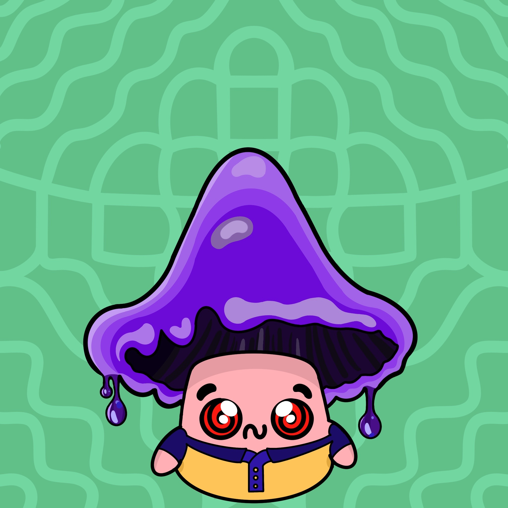
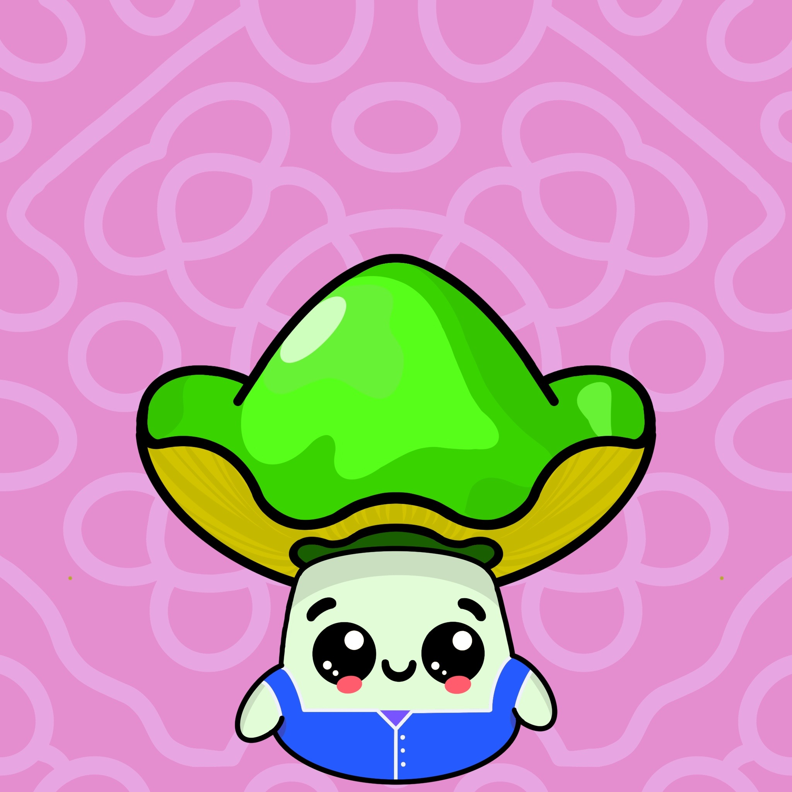
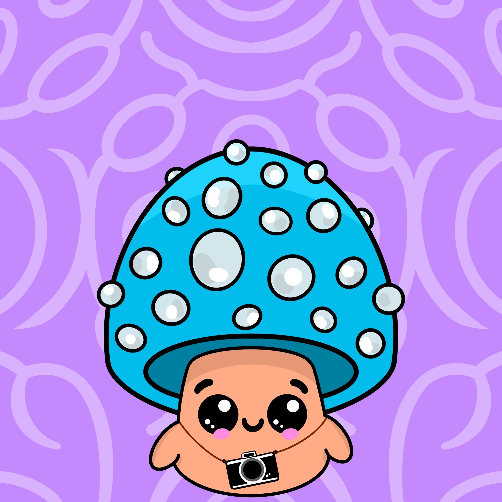
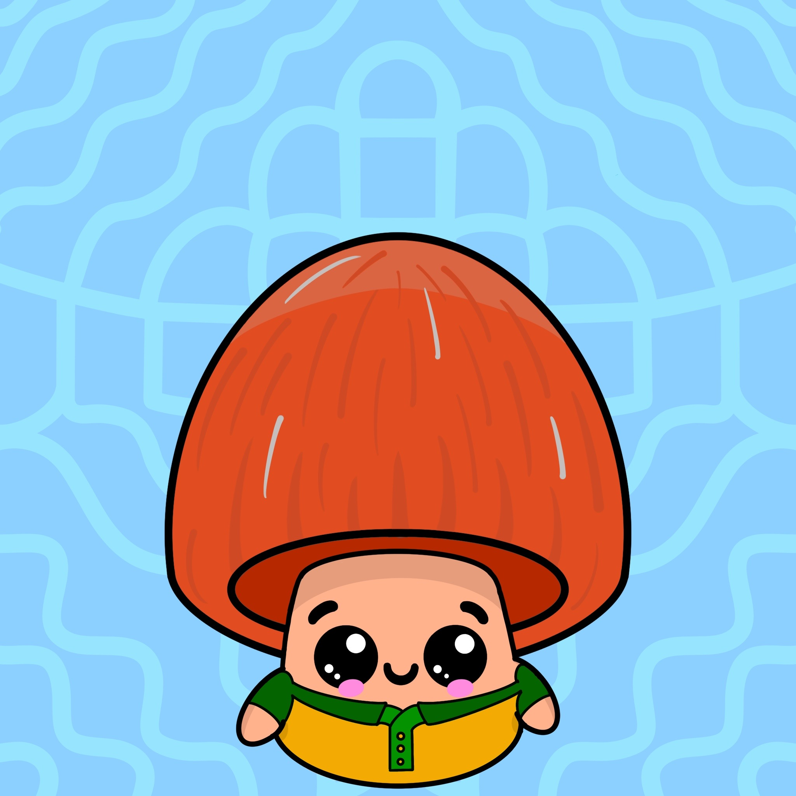

{{"about" | uppercase }}
Welcome to Shroomiez fellow friend. Shroomiez is an NFT collection, community and platform which:
- Enables holders to decide on what is featured in the Shroomieverse
- Features access to the most trusted dApps and NFT collections
- Incentivizes the creation and reproduction of high quality content
{{ "specs" | uppercase }}
Each Shroomiez is uniquely hand-drawn, featuring realistic attributes such as the Species itself, the
Cap and the Spiking Activity: all of which come from 36 different mushroom species.
The backgrounds are also hand-drawn, and are visual representations of primordial sound frequencies -- tuning each Shroomiez to its natural environment.
The backgrounds are also hand-drawn, and are visual representations of primordial sound frequencies -- tuning each Shroomiez to its natural environment.
|  |  |
|  |  |
{{"the team" | uppercase}}
Shroomiez was launched with the support of quite a few anonymous Miladys, Beras, BGANs, Tubbys, et many more passionate NFT holders.
With an ample variety of personalities and backgrounds, from ex-JPM Quants, McKinsey (Global) Partners, VC & hedge fund Managers and tech-savvy celebrities, Shroomiez is well positioned to disrupt the NFT space and the physical world with a never-seen-before NFT-to-Physical approach.
More details on treasury multi-sig and official management will be revealed once Shroomiez is fully incorporated and legally covered.
With an ample variety of personalities and backgrounds, from ex-JPM Quants, McKinsey (Global) Partners, VC & hedge fund Managers and tech-savvy celebrities, Shroomiez is well positioned to disrupt the NFT space and the physical world with a never-seen-before NFT-to-Physical approach.
More details on treasury multi-sig and official management will be revealed once Shroomiez is fully incorporated and legally covered.